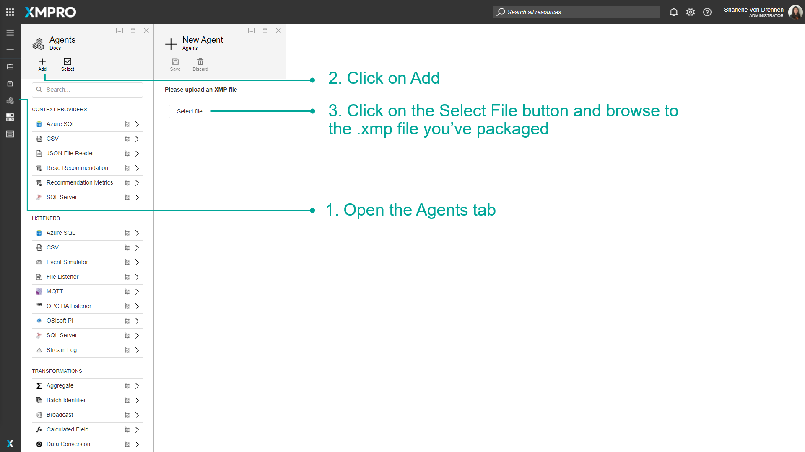
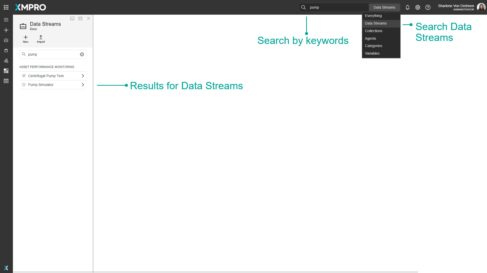
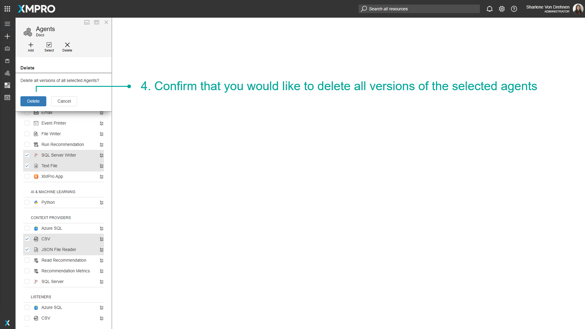

Manage Agents
Agents create the foundation for Data Streams, and they can be connected to other Agents to create the flow of data. Each Agent performs a specific function. They are useful as they can be used to either retrieve data in real-time, display data, filter or sort the data, or save them to another database, depending on the function of that individual Agent.
Note
It is recommended that you read the article listed below to improve your understanding of Agents.
Creating Agents
Creating an Agent can be divided into two parts:
Writing the code for an Agent
Agents are generally written in C# as library projects that make use of the XMPro.IoT.Framework NuGet package.
XMPro.IoT.Framework requires your project to be written using a predefined structure. This structure requires you to implement certain interfaces, depending on the type of Agent you are creating.
To learn more about how to use this framework, refer to these instructions.
Note
Code for some Agents has been made available on GitHub. It might be useful to use these resources as an example when writing your own Agents.
Packaging the Agent
After writing your code, you need to use the XMPro Package Manager Windows 10 desktop application to package your Agent.
This application allows you to specify all the properties your Agent requires, add the user settings in the form of controls, and allows you to upload the DLL of the Agent you've written. Finally, it will create a file with a ".xmp" extension, which you can upload to Data Stream Designer and start to use to build Streams.
To package the Agent, refer to these instructions.
Adding an Agent
After writing a new Agent and packaging it, you can upload it to Data Stream Designer by following the steps below:
- Open the Agents page from the left-hand menu.
- Click Add.
- Click the Select File button and browse to the .xmp file you've packaged.
- If the .xmp file is valid, some of the details contained in the file, such as the name of the Agent, will automatically be listed on the form.
- Select the category of the Agent (prepopulated if contained in the file)
- Click Save.
Note
The Metadata field allows you to add tags for the Agent. You can either select a value from the drop-down that appears when you click in the field or type a new value and press Enter.


Additional information that forms part of the Agent's details will be displayed on the form, such as the version and Metadata.

The newly uploaded Agent will now be available in the toolbox on the Use Case canvas page. To add an Agent to the canvas, follow the steps below:
- Open the Data Streams page from the left-hand menu.
- Select your Data Stream.

- Expand the category in the toolbox where your Agent is located.
- Click on your Agent and drag the Agent to the canvas.
- Click Save.

Bulk Adding Agents
Uploading multiple Agents begins like a single Agent (see Adding an Agent above), except a compressed (.zip) file is selected.
Note
A 100 MB limit applies to the decompressed file size, not the compressed one.
If the .zip file is valid, a data grid is populated with the Agent name, version, ID, category, and file size. Complete the upload by following the steps below:
- Select the category of the Agents (prepopulated if contained in the respective .xmp file)
- Click on Save
If any Agents fail the initial validation due to a missing category, a status column appears to identify them. To fix this, (1) select the category and (2) click on Save. Or Discard to exit the blade.

The status column will advise which Agents were uploaded successfully, and which were ignored as the version already exists.

Upgrading Agents
To upgrade Agents in the Data Stream, visit How To Upgrade a Stream Object Version.
Deleting Agent Versions
To remove one or more versions of a specific Agent, first, make sure that the versions of the Agent that you're planning to remove are not being used anymore. Then, open the Agents page from the left-hand menu and follow the steps below:
- On the Agents page, select the Agent.
- Click on "Delete Versions".
- Select the versions you would like to delete.
- Click Delete.

Deleting Agents
When planning to remove multiple Agents completely at the same time, make sure they are not being used anymore. Open the Agents page from the left-hand menu and follow the steps below:
- Click on "Select".
- Select all the Agents you would like to remove.
- Click on "Delete".
Note
To cancel the selection, click on "Select" again.

- Confirm that you would like to delete all versions of the selected Agents.

Finding Help for Agents
Help documentation is available for every Agent. These pages provide context, configuration definitions, an example, and release notes to help if you are unsure of anything related to the Agent you are configuring.
See the Integrations article for the list of Agent documentation links.
Last modified: May 29, 2025